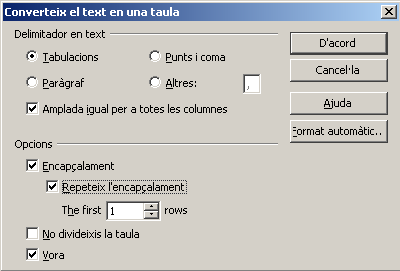
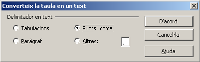

UF3. Processadors de text
Pràctica 5 - Exercici 3
Convertir un text en taula
El LibreOffice Writer permet convertir un text en una taula: les tabulacions i altres caràcters serviran per definir les columnes, i els paràgrafs per definir les files. Per convertir un text en una taula hi ha dues maneres de fer-ho:
- Una vegada seleccionat el text, activar la icona de creació de taules
 o l'opció Taula | Insereix | Taula… Si s'utilitza aquesta opció, el caràcter per a la definició del nombre de columnes és la tabulació.
o l'opció Taula | Insereix | Taula… Si s'utilitza aquesta opció, el caràcter per a la definició del nombre de columnes és la tabulació.
- Una vegada seleccionat el text, escollir l'opció Taula | Converteix | Text a taula… El caràcter per a la definició del nombre de columnes es pot modificar en el quadre de diàleg. El procés contrari de convertir una taula en text també és possible, i per aconseguir-ho cal seleccionar la taula i activar l'opció Taula | Converteix | Taula a text… i escollir el tipus de separador tal i com mostra el quadre de diàleg.
- Obriu el següent document: alumnes.odt
- Afegiu les dades de cinc alumnes més, separades per tabulacions.
- Introduïu les dades, separant-les cada una de la següent, amb la tecla de tabulació; no importa que no quedin encolumnades; el que és important és que només hi hagi un sol salt de tabulació entre les dades. Acabeu les línies amb RETORN.
- Seleccioneu el text i convertiu-lo en una taula.
- Seleccioneu tot el text que hi ha escrit.
- Premeu l'eina (Taula).
- Apliqueu format a la taula:
- Situeu-vos en qualsevol cel·la de la taula.
- Demaneu Taula | Formació automàtica.
- De la llista Format, escolliu Negre 2.
- Premeu el botó d'Acord.
- Proveu amb altres formats, també activant o desactivant les diferents opcions dels elements que integraran l'autoformat i que apareixeran clicant el botó Més.
- Ajusteu, manualment o amb Taula | Adaptació automàtica | Amplada de la columna… (o alçada de la fila), la grandària de les files i les columnes.
- Deseu el document amb el nom taula_alumnes.odt

|
|

|
|